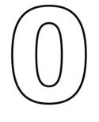
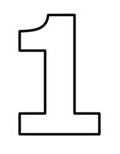

В мире машинного обучения тоже есть свой Hello world и это нейросеть решающая проблему исключающего или(XOR). Таблица исключающего или выглядит следующим образом:
| a | b | c |
|---|---|---|
|  | ||
|  | ||
Нейронная сеть — это последовательность нейронов, соединенных между собой синапсами. Структура нейронной
сети пришла в мир программирования прямиком из биологии. Благодаря такой структуре, машина обретает
способность анализировать и даже запоминать различную информацию. Нейронные сети также способны не только
анализировать входящую информацию, но и воспроизводить ее из своей памяти. Заинтересовавшимся обязательно к
просмотру 2 видео из TED Talks: Видео 1, Видео 2). Другими словами, нейросеть это машинная интерпретация
мозга человека, в котором находятся миллионы нейронов передающих информацию в виде электрических импульсов.
Какие бывают нейронные сети?
Пока что мы будем рассматривать примеры на самом базовом типе нейронных сетей — это сеть прямого
распространения (далее СПР). Также в последующих статьях я введу больше понятий и расскажу вам о
рекуррентных нейронных сетях. СПР как вытекает из названия это сеть с последовательным соединением нейронных
слоев, в ней информация всегда идет только в одном направлении.
Нейронные сети используются для решения сложных задач, которые требуют аналитических вычислений подобных тем, что делает человеческий мозг. Самыми распространенными применениями нейронных сетей является:
Нейрон — это вычислительная единица, которая получает информацию, производит над ней простые вычисления и передает ее дальше. Они делятся на три основных типа: входной (синий), скрытый (красный) и выходной (зеленый). Также есть нейрон смещения и контекстный нейрон о которых мы поговорим в следующей статье. В том случае, когда нейросеть состоит из большого количества нейронов, вводят термин слоя. Соответственно, есть входной слой, который получает информацию, n скрытых слоев (обычно их не больше 3), которые ее обрабатывают и выходной слой, который выводит результат. У каждого из нейронов есть 2 основных параметра: входные данные (input data) и выходные данные (output data). В случае входного нейрона: input=output. В остальных, в поле input попадает суммарная информация всех нейронов с предыдущего слоя, после чего, она нормализуется, с помощью функции активации (пока что просто представим ее f(x)) и попадает в поле output.
Важно помнить, что нейроны оперируют числами в диапазоне [0,1] или [-1,1]. А как же, вы спросите, тогда обрабатывать числа, которые выходят из данного диапазона? На данном этапе, самый простой ответ — это разделить 1 на это число. Этот процесс называется нормализацией, и он очень часто используется в нейронных сетях. Подробнее об этом чуть позже.
Синапс это связь между двумя нейронами. У синапсов есть 1 параметр — вес. Благодаря ему, входная информация изменяется, когда передается от одного нейрона к другому. Допустим, есть 3 нейрона, которые передают информацию следующему. Тогда у нас есть 3 веса, соответствующие каждому из этих нейронов. У того нейрона, у которого вес будет больше, та информация и будет доминирующей в следующем нейроне (пример — смешение цветов). На самом деле, совокупность весов нейронной сети или матрица весов — это своеобразный мозг всей системы. Именно благодаря этим весам, входная информация обрабатывается и превращается в результат. Важно помнить, что во время инициализации нейронной сети, веса расставляются в случайном порядке.